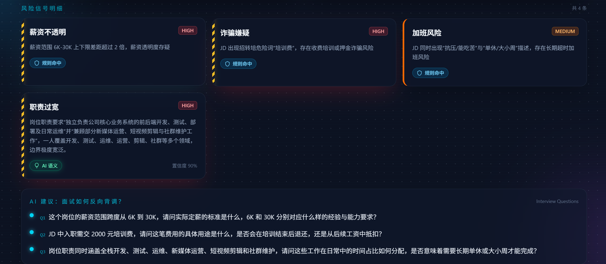

作品介绍文档 / PROJECT BRIEF2026 AI 创新应用挑战赛
05项目图片
图 1 为审计结果大屏，图 2 为 AI 专属锦囊与面试追问；图 3 见下页，为 AI 宕机后的降级结果与信号明细。


看图 1
先看总分，再看依据
总分给直觉，雷达图给结构，逐条信号给可核实的理由。
看图 2
从“有问题”到“怎么问”
锦囊负责防御动作，追问负责现场验证。
岗位反向尽调助手 · 作品介绍文档P.04
把招聘 JD 从“公司挑你”，翻译成“你先看清它”。
打开网页、粘贴 JD、点一次「一键审计」，在投简历之前拿到一份风险报告。
这是一个面向求职者的岗位反向尽调工具。它不教用户怎么写简历，也不替用户投递，只做一件事：在用户投入时间之前，把 JD 里的风险摊开。目标用户是正在找工作、准备面试、收到 HR 或猎头邀约的人，尤其是经验不多、容易被“发展空间大”“薪资面议”“抗压能力强”说服的求职者。
使用方式刻意做得极简：打开网页 → 粘贴招聘 JD → 点击「一键审计」。不需要注册，不需要上传简历，也不需要理解什么是规则引擎或大模型。几秒后，用户拿到一份风险报告：风险总分、风险等级、每条风险的判定依据，以及避坑建议和面试追问。
如果只让评委记住三件事，我希望是这三件：排得准、看得爽、挂不了。它们分别对应求职者的三种真实情绪——怕漏掉关键信息、看不懂话术、担心工具关键时刻掉链子。
规则引擎负责“可以证明的风险”：薪资面议或跨度异常、职责描述模糊、要求自相矛盾、加班与招转培信号、信息量严重不足；LLM 负责“只能读出来的语义”：PUA 文化、过度包装、大而全岗位、要求与薪资错配。两路结果按风险类型合并，冲突时规则优先，每条信号都带来源与判定依据。
报告不只给结论，还给三种可以直接用起来的内容：毒舌锐评用一句话说破问题，避坑锦囊给出 2-3 条防御动作，面试追问给出 3 个可以照着问 HR 的问题。前者负责被看见，后两者负责被用上。
模型欠费、断网或超时，系统不会把“没分析”伪装成“没风险”：请求仍然返回规则报告，并明确追加一条 AI_SERVICE_DOWN 系统提示；同一段 JD 在 24 小时内重复查询直接走缓存，降级结果不写缓存。无模型外呼的演示模式，一次审计约 0.4 秒返回。
| 用户情绪 | 对应亮点 | 用户实际得到 |
|---|---|---|
| 怕漏掉关键信息 | 双引擎排雷 | 规则兜底 + 语义补充，每条风险有依据 |
| 看不懂话术、不知道怎么问 | 情绪价值拉满 | 锐评、锦囊、面试追问三件套 |
| 怕工具关键时刻挂掉 | 极速高可用 | AI 降级可见，规则报告照常返回 |
开发全过程使用 Trae 作为 AI 辅助工具。我们没有把 AI 当成“代写代码的机器”，而是把它放进一条可追溯、可回归的工程流程：需求怎么推演、Prompt 怎么改、Bug 怎么修，都留下记录。
具体做法是：引入 H2 内存数据库与 Mock，把外部模型和真实数据库从测试链路里剥离；规则引擎、坏 JSON 降级、批量写入回滚、Prompt 结构分别有独立用例。这样做的价值不是“测试数量好看”，而是让 AI 参与的每一次改动都能被回归验证——换一台机器、换一个没有 Key 的环境，仍然能复现同样的结果。
测试分布：规则引擎 14 项，容错与降级 2 项，Prompt 契约 3 项，事务回滚 1 项，应用启动与冒烟各 1 项；线上冒烟用例默认跳过。
技术选择只服务三个产品目标：快、稳、可解释。没有为了堆栈好看而引入组件，每一项都能对应到用户能感知的结果。
图 1 为审计结果大屏，图 2 为 AI 专属锦囊与面试追问；图 3 见下页，为 AI 宕机后的降级结果与信号明细。

关闭模型外呼后重新提交同一段 JD，系统仍输出规则信号，并在明细中标注降级状态。降级结果页与信号明细分别如图 3（a）、图 3（b）所示。